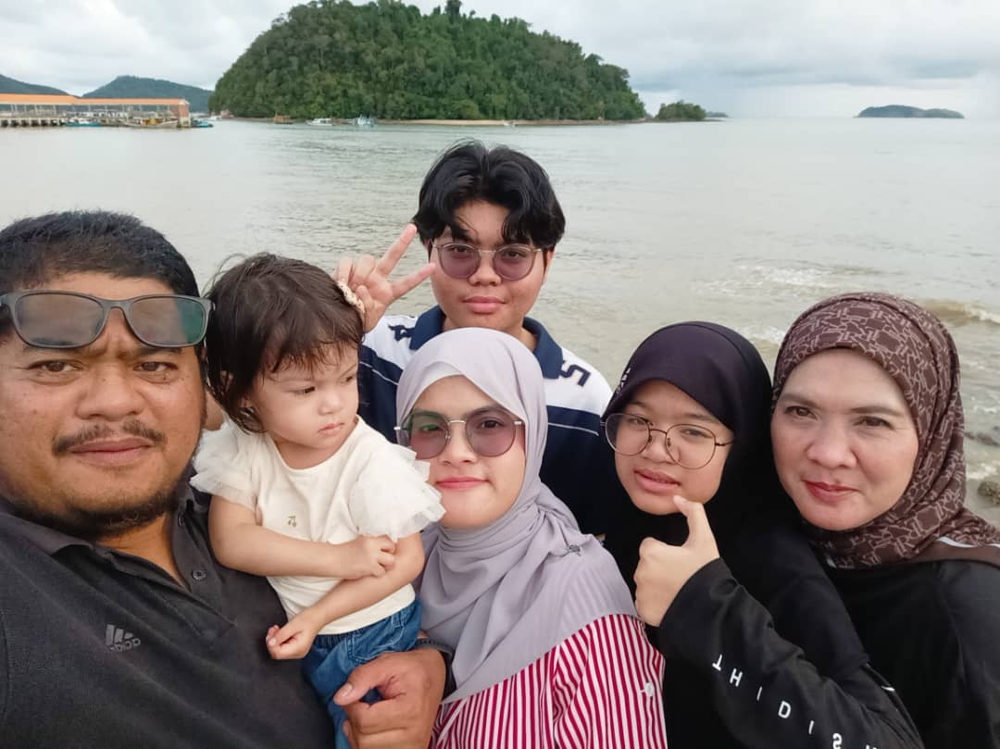
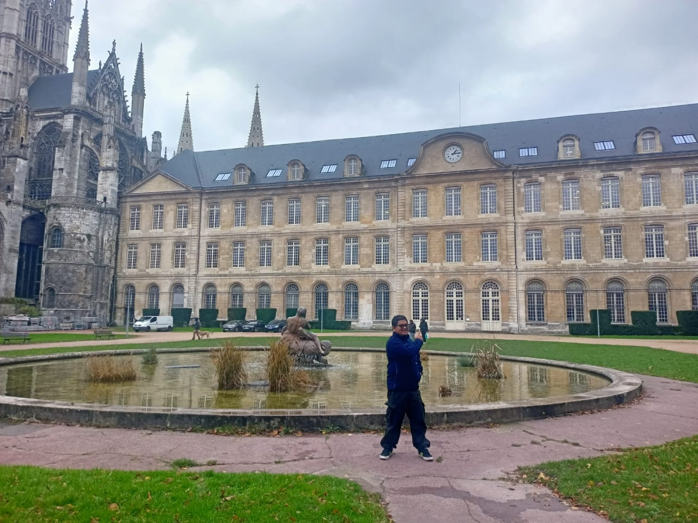
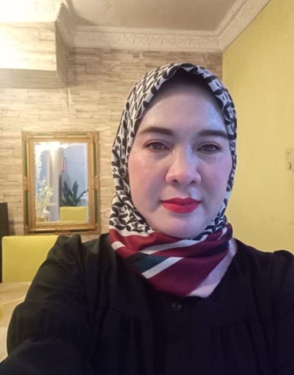
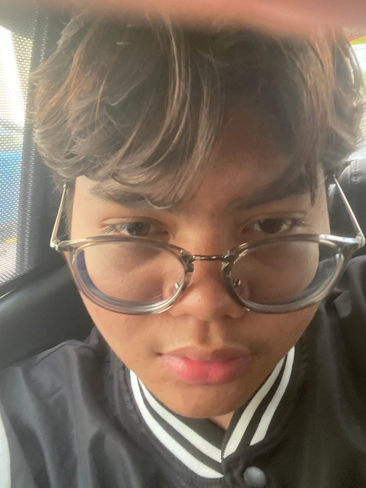
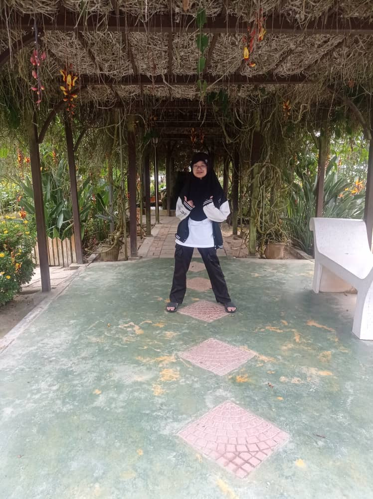
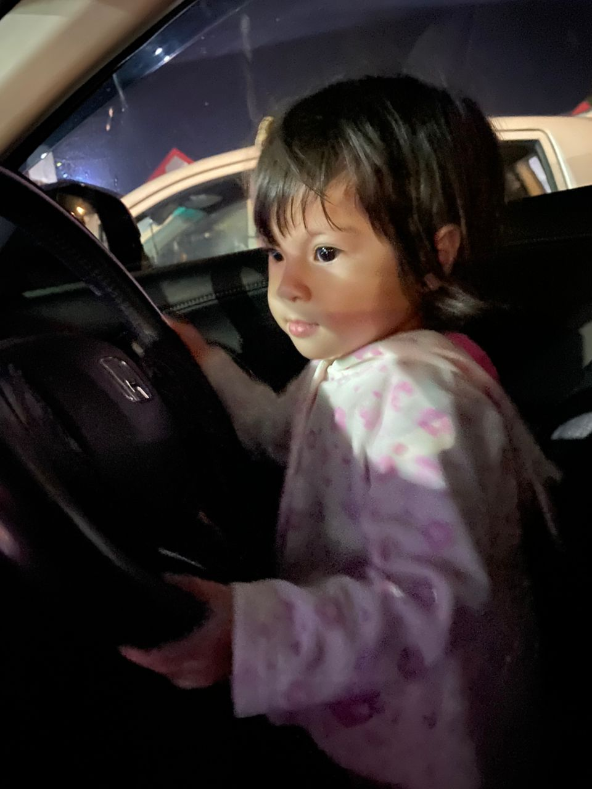

Home
Profile
Education
Skills and Experience
Family
Gallery
FAMILY
ׂׂ MY SMALL FAMILY '*•.¸♡ ♡¸.•*'
Introducing my small family of 6.
My Small Family Members •

This is the latest picture of my whole family when we are on a trip to Mersing, Johor
♡ 🗨 ➤
My Father •

Nik Aziz bin Mat Daud
Age: 49 years oldDate of Birth: 27 March 1975
Place of Birth: Kota Bahru, Kelantan
Occupation: Safety Healthy Officer
The first child out of 8 siblings
♡ 🗨 ➤
My Mother •

Siti Azma binti Abas
Age: 44 years oldDate of Birth: 23 October 1980
Place of Birth: Kota Bahru, Kelantan
Occupation: Housewife
The first child out of 4 siblings
♡ 🗨 ➤
My Younger Brother •

Nik Mohamad Aqil bin Nik Aziz
Age: 19 years oldDate of Birth: 2 April 2005
Place of Birth: Hospital Sultanah Aminah, Johor Bahru
Currently studying at Kolej Poly-Tech MARA (KPTM), Batu Pahat
The second child out of 4 siblings
♡ 🗨 ➤
My Younger Sister •

Nik Nur Aisyah Rania binti Nik Aziz
Age: 11 years oldDate of Birth: 17 June 2013
Place of Birth: Hospital Sultanah Aminah, Johor Bahru
Currently studying at SK Kota Masai 2
The third child out of 4 siblings
♡ 🗨 ➤
My Younger Sister •

Nik Nur Aleeya binti Nik Aziz
Age: 2 years oldDate of Birth: 26 August 2022
Place of Birth: Hospital Penawar, Pasir Gudang
The youngest child out of 4 siblings
♡ 🗨 ➤
@Adila Amalin